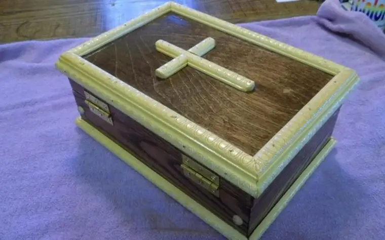

FOREST RIVER, N.D. — It’s been more than two years since his granddaughter Ruby died, but for Steve Jarolimek, the memories are still easily within reach.
“You can just imagine how hard it was,” he recalls of seeing his daughter Sara Schultz, Fargo, grieve the death of her daughter, who died in utero on Aug. 25, 2016.
“When we went to the funeral home, they didn’t have anything to put little Ruby in. They suggested some people use Tupperware,” he continued. “Sara just broke down and said, ‘She’s not leftovers.’”
Though they did eventually find a small, handcrafted casket at a funeral home in Grafton, N.D., that moment of reckoning became seared in the hearts of both Jarolimek and Schultz.
“I just felt compelled to try to find a way to solve this problem for other people. I didn’t want others to go through it,” Schultz says. “My dad and I have been researching for a long time, trying to find options (for other grieving families).”
Her brother-in-law had been the one to discover the casket Ruby was buried in, made by someone from Park River, whom they heard was now deceased. The idea roused Jarolimek’s curiosity.
“I thought, jeepers creepers, there’s got to be a lot of other people who’ve experienced this, and I realized it was something I’d like to get behind,” he said.
His search to find another maker of tiny caskets led him to Leo Grossman in Harvey, N.D., who’d been approached by Sister Mary Agnes Huber, a chaplain at St. Aloisius Medical Center in Harvey, to craft “some small boxes” for the bodies of babies who die in miscarriage at the hospital.

“I showed them the casket, and they couldn’t believe it,” he says. The council readily agreed to back the project.
The caskets, measuring 5.5 inches in height and 8.75 by 12.75 inches in length and width, are solid oak.
“I enjoy making them. It takes about three days for one casket,” Grossman says, noting, “If you go out to our cemetery, there’s a row of trees, and a line of small graves of babies.”
He doesn’t line them, though. That honor has been given to Huber.
“They’re beautiful; simply beautiful,” Huber says. “Leo lined the first one, but I’ve done the rest. Someone gave me some satin material, so I put a little padding in and finish them off.”
Huber says when she showed the caskets to the ministerial group at the hospital, “they couldn’t believe we gave them away for nothing.” But making money was never the aim.
“We wanted it to be a service to those in need,” she says.
The Rev. Frank Miller, pastor at St. Cecilia’s Catholic Church in Harvey, explains that one of the corporeal works of mercy includes burying the body.
“We have an understanding that when a family has lost a child, there should be a proper burial in response to the dignity of the human body,” he says. “It’s a very difficult time, a sad and grieving time, and this is a way to help them through their grieving process.”
Schultz agrees, saying the baby’s size or age is irrelevant when it comes to grief.
“Just because they’re tiny doesn’t mean they mean less, that the mom hurts less, or that the parents suffer less,” she says. “I go to a monthly support group (for infant loss), and there are plenty of moms who barely made it to 10 weeks, but they’re still grieving. It’s still their child.”
Some mothers, she says, have expressed sadness from feeling the only option they had following a miscarriage was to flush their child down the toilet.

“There’s the remorse and guilt they feel afterwards, believing that was their only choice,” she says.
“Being able to honor these babies no matter what stage they’re at is really important; that’s part of the whole healing process,” Schultz adds. “And it’s amazing for that to be offered at no cost.”
Schultz says she’ll be forever grateful she and her husband, Steve, were able to lay their daughter to rest in such a dignified way.
“I’ll never forget what it meant to me, to have (a real casket) instead of Tupperware.”
She hopes the idea will take off — that other Knights of Columbus councils and even non-Catholic organizations will consider joining the endeavor.
“I’m sure there are plenty of groups in town that would be willing to do this kind of thing, not just the KCs,” Schultz says. “Infant loss happens to everyone.”
“It’s definitely something no one should have to go through, to feel so helpless like that,” she adds. “It’s the worst feeling, on top of the grief that is already the worst in the world. It’s like kicking you when you’re already down.”
The day of our interview, Schultz was in “nesting mode,” just days from delivering the couple’s fifth child. On Oct. 18, Zelie Grace came into the world, healthy and eagerly welcomed by her brothers, ages 8, 6 and 5.
Along with being Respect Life Month, October also features infant loss and awareness.
[For the sake of having a repository for my newspaper columns and articles, I reprint them here, with permission, a week after their run date. The preceding ran in The Forum newspaper on Oct. 27, 2018.]